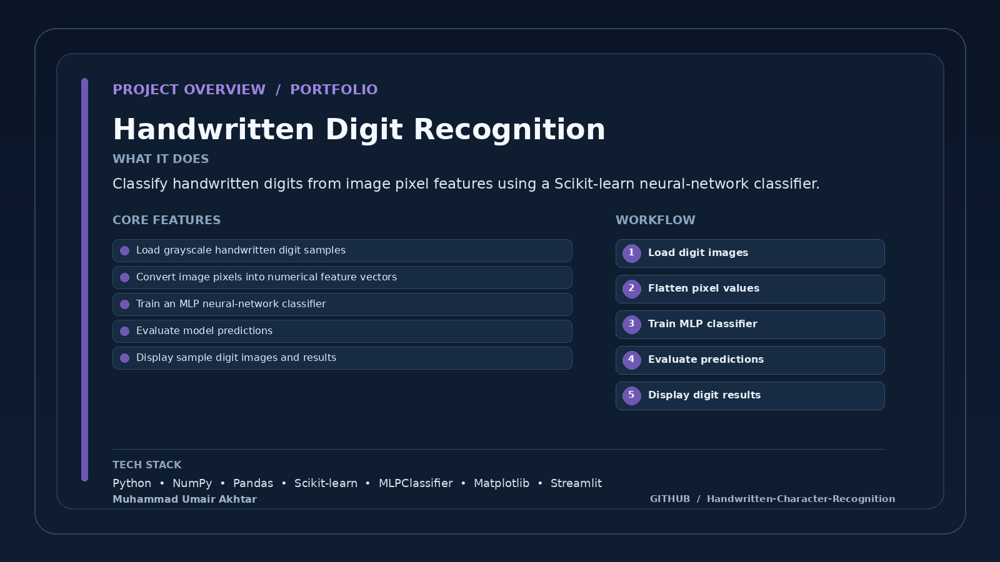

PROJECT 07 / PORTFOLIO
Handwritten Digit Recognition
Classify handwritten digits from image pixel features using a Scikit-learn neural-network classifier.

Project Overview
Classify handwritten digits from image pixel features using a Scikit-learn neural-network classifier.
Key Features
- Load grayscale handwritten digit samples
- Convert image pixels into numerical feature vectors
- Train an MLP neural-network classifier
- Evaluate model predictions
- Display sample digit images and results
Project Workflow
Load digit images → Flatten pixel values → Train MLP classifier → Evaluate predictions → Display digit results
Technologies Used
Scope & Notes
The included Scikit-learn digits dataset uses 8×8 images of digits 0 to 9. It is not full alphabet recognition or production OCR.
Explore the code.
The complete source code and project files are available in the GitHub repository.
Open GitHub ↗